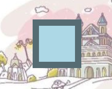
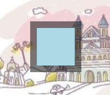
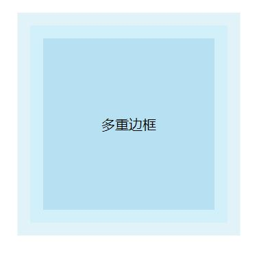
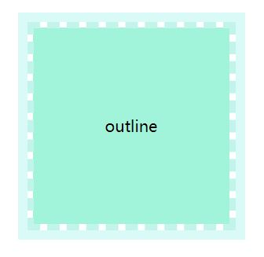

场景一：
实现半透明边框：
由于CSS样式的默认行为，背景色的渲染范围是 content+padding+border。
半透明边框被主调色影响, 实现的效果为
 
解决方案：
使用background-clip 属性规定背景的绘制区域,使得绘制区域仅限制在content+padding。
Div {
border:10px solid rgba(0,0,0,.5);
background: lightblue;
background-clip: padding-box;
}补充： background-clip 不兼容IE6-8, Opera10
场景二：
实现多重边框：
方案1： 使用box-shadow来生成多重投影
代码与效果如下：
div {
background:#c3e6f4;
box-shadow:0 0 0 15px #b7dae6,0 0 0 30px #cce2ea;
}
方案2：盒子边框结合描边属性(outline)
特点： 只能实现两重边框，更加灵活，能使用虚线等效果
代码与效果如下：
div {
border: 6px dashed #c3f4ec;
outline: 10px solid #d9faf6;
background-clip: padding-box;
}